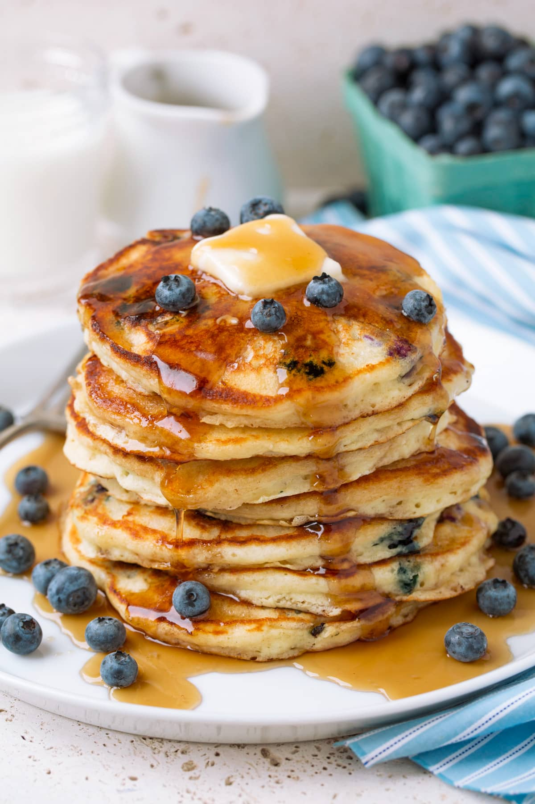

Blueberry Pancakes

Description
Soft, fluffy blueberry pancakes served with butter and brown sugar.
Ingredients
- 1 ¼ cups all-purpose flour
- 1 tablespoon baking powder
- 1 ¼ teaspoons white sugar
- ½ teaspoon salt
- 1 cup milk
- 1 egg
- ½ tablespoon butter, melted
- ½ cup frozen blueberries, thawed
Instructions
- Sift flour, baking powder, sugar, and salt together in a large bowl.
- Combine milk and egg in a small bowl. Stir egg mixture into flour mixture until just combined.
- Stir in melted butter, then fold in blueberries. Set aside for 1 hour.
- Heat a lightly oiled griddle or nonstick frying pan over medium-high heat.
- Pour or scoop the batter onto the hot griddle, using approximately 1/4 cup for each pancake; cook until bubbles appear on the surface, then flip and cook until golden brown on both sides. Serve hot.
Return to top